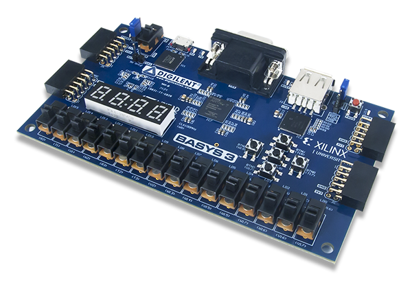

This is the lab web page for ECEn 320 course.
It is in the lab that you will learn how to actually design, build, and test digital
circuits.
The following topics will be covered:
Logic equations and truth tables
Combinational logic
Sequential logic and Finite State Machines
SystemVerilog
FPGA Devices
